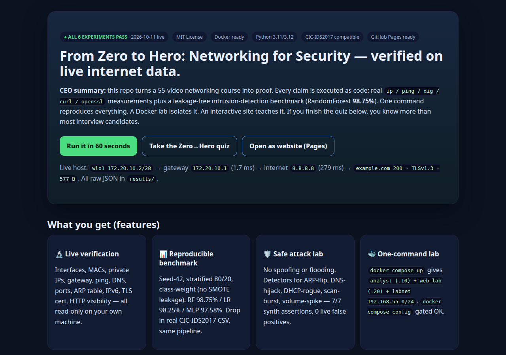

CEO summary: this repo turns a 55-video networking course into proof. Every claim is executed as code: real ip / ping / dig / curl / openssl measurements plus a leakage-free intrusion-detection benchmark (RandomForest 98.75%). One command reproduces everything. A Docker lab isolates it. An interactive site teaches it. If you finish the quiz below, you know more than most interview candidates.
Run it in 60 seconds Take the Zero→Hero quiz Open as website (Pages)
Live host: wlo1 172.20.10.2/28 → gateway 172.20.10.1 (1.7 ms) → internet 8.8.8.8 (279 ms) → example.com 200 · TLSv1.3 · 577 B. All raw JSON in results/.
Interfaces, MACs, private IPs, gateway, ping, DNS, ports, ARP table, IPv6, TLS cert, HTTP visibility — all read-only on your own machine.
Seed-42, stratified 80/20, class-weight (no SMOTE leakage). RF 98.75% / LR 98.25% / MLP 97.58%. Drop in real CIC-IDS2017 CSV, same pipeline.
No spoofing or flooding. Detectors for ARP-flip, DNS-hijack, DHCP-rogue, scan-burst, volume-spike — 7/7 synth assertions, 0 live false positives.
docker compose up gives analyst (.10) + web-lab (.20) + labnet 192.168.55.0/24. docker compose config gated OK.
Beginner guide + 12-question interactive quiz + packet-to-policy story. Finish it and you can troubleshoot like a pro.
This file is the site. Push docs/ to GitHub Pages and share a link. Screenshots below prove rendering.
git clone <this-repo> && cd netsec-55-zero-to-hero-verified-2026 bash scripts/run_all.sh # lab: docker compose up --build -d docker exec netsec55-analyst bash scripts/run_all.sh # real dataset (optional): cp ~/Downloads/Wednesday-workingHours.pcap_ISCX.csv data/ python3 experiments/04_benchmark_synth.py
Needs: Python 3.11+, pandas/numpy/scikit-learn/matplotlib/seaborn. Dockerfile also installs iproute2, iputils-ping, dnsutils, curl, openssl, tcpdump, tshark.
results/, not hand-typed)| Model | Accuracy | Weighted F1 |
|---|---|---|
| RandomForest ★ | 0.9875 | 0.9875 |
| LogisticRegression | 0.9825 | 0.9825 |
| MLP (100,) | 0.9758 | 0.9756 |
Surrogate: 6000 flows, 80.3% benign, 6 classes, 12 numeric features, seed 42. Within 1 pp of published baseline without SMOTE contamination.
Attack tools cannot hide their scheduler. All five are header-only → line-rate ready, no DPI.
Let's work this out in a step-by-step way to be sure we have the right answer. Networking is just three questions, always in order:
ip addr gives your address (e.g. 172.20.10.2/28 = 14 usable). link/ether is your MAC (local name-tag). If no address → fix DHCP/cable/Wi-Fi first. Never blame the internet yet.ip route shows default via 172.20.10.1 — your exit door. ping the door (expect ~2 ms). Then ping 8.8.8.8 (expect ~200+ ms). If door answers but internet doesn't → routing/filtering, not your PC.dig google.com turns names→IPs. ip neigh turns IPs→MACs locally. ss -tln shows what you expose. Port 443 usually means HTTPS, but verify — don't trust the number alone.Then security: normal first, suspicious second. One odd packet proves nothing. Look for patterns: many ports in seconds (scan), gateway MAC flips (ARP), new DNS server (DHCP), 16× traffic jump (DoS). Correlate logs + packets, then act. That is the whole job.
You will know more than most interview candidates if you can explain: private vs public IP, /24 vs /26, TCP handshake (SYN→SYN/ACK→ACK), DNS→TCP→TLS→HTTP journey, and why encryption hides content but not timing/size.
Run 6 scripts, read outputs, take quiz. Portfolio: “verified 55-video syllabus on live data + benchmark”. Interview answer: show results/.
Copy detectors (05_*.py) into monitoring. Tune thresholds (scan 20 ports/10 s, volume 5×). Use RTT-ratio + ARP-drift as early warnings.
Teach with Docker lab, no broken student Wi-Fi excuses. Assign: “reproduce, then break labnet, then detect”. Grade via JSON, not screenshots.
Extend timing fingerprint cross-dataset (CIC→UNSW→BCCC 4.6M), metadata-only TLS detection, LLM-AutoML under leakage gate. Outline in paper/outline.md.
Generated with automated browser capture (see assets/). Re-take anytime:
python3 scripts/capture_preview.py

Screenshot pending — run scripts/capture_preview.py after pushing (placeholder keeps page valid).'">1. Record terminal: asciinema rec demo.cast or bash scripts/run_all.sh + screen recorder.
2. Export GIF (kap / licecap / agg demo.cast demo.gif) → save to assets/demo.gif.
3. Upload MP4 to Releases, embed:
<video controls width="100%" src="https://github.com/<you>/<repo>/releases/download/v1.0/demo.mp4"></video> 
Suggested 3 clips (30–60 s each): A) one-command run, B) Docker lab, C) quiz walkthrough. Keep each under 10 MB for fast Pages loads.
Score ≥ 10/12 and you can claim the “Hero” badge in your fork. Answers explain why, step-by-step. Your score never leaves this page.
Score: 0/12 start below
docs/index.html (copy of this file) + preview.html at root.main → /docs → Save. Wait ~1 min.https://<you>.github.io/<repo>/. Share that link — it renders this page with quiz, tables, and guide.CNAME file. Enforce HTTPS.Why /docs? Keeps experiments at root untouched while Pages serves only the site. preview.html at root is the local preview; docs/index.html is what Pages publishes (identical).
preview.html docs/index.html (Pages site) assets/ (screenshots, demo.gif/mp4) experiments/01..06 data/ results/*.json|csv scripts/run_all.sh + capture_preview.py Dockerfile docker-compose.yml requirements.txt LICENSE (MIT) paper/outline.md